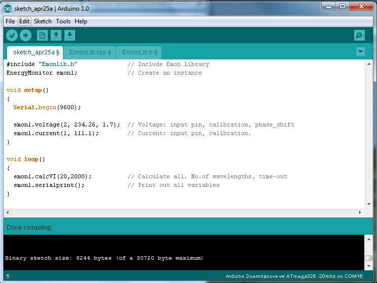

Can any one advise me regarding what to use to convert AC to DC to input the UNO for voltage and two current sensors. I have all the hardware and have used some true rms to dc converters but they don't seem to interface properly with the UNO.
Thanks
Mark.
Re: AC Analog conversion for UNO
See here: http://openenergymonitor.org/emon/buildingblocks/ct-sensors-interface We have gone along the route of calculating true rms on the arduino itself.
Re: AC Analog conversion for UNO
Thanks Trystan, I have build a voltage input circuit but the sketch is throwing up problems as errors below.
voltage_and_current_ex.cpp.o: In function `loop':
C:\DOCUME~1\MARK~1.BEA\LOCALS~1\Temp\build2352948031508961507.tmp/voltage_and_current_ex.cpp:17: undefined reference to `EnergyMonitor::calcVI(int, int)'
C:\DOCUME~1\MARK~1.BEA\LOCALS~1\Temp\build2352948031508961507.tmp/voltage_and_current_ex.cpp:18: undefined reference to `EnergyMonitor::serialprint()'
voltage_and_current_ex.cpp.o: In function `setup':
C:\DOCUME~1\MARK~1.BEA\LOCALS~1\Temp\build2352948031508961507.tmp/voltage_and_current_ex.cpp:11: undefined reference to `EnergyMonitor::voltage(int, double, double)'
C:\DOCUME~1\MARK~1.BEA\LOCALS~1\Temp\build2352948031508961507.tmp/voltage_and_current_ex.cpp:12: undefined reference to `EnergyMonitor::current(int, double)'
Any Ideas, I'm a little green with this.
Re: AC Analog conversion for UNO
I can't seem to get the sketch to compile Trystan. Errors are as follows.
Re: AC Analog conversion for UNO
Can anyone help with this? I am not seeing something here in the example script. I want to get my immersion heater device finish then I can post it on here.
Re: AC Analog conversion for UNO
It seems that I am stuck out on a limb here, tried my hardest to workout what is wrong with the sample sketch here http://openenergymonitor.org/emon/buildingblocks/ct-sensors-interface.
I have put the emon lib in but still keeps coming up with error "undefined reference to `EnergyMonitor::current(int, double)' for voltage and current. Please help someone.
Re: AC Analog conversion for UNO
Maybe silly question but did you copy the EmonLib directory into the libraries directory of Arduino ?
Re: AC Analog conversion for UNO
Yes I have done that prensel; with all the post regarding the example others seem to get it working ok. I'm just learning about the Arduino and have carried out what is said but it throws the fore mentioned errors on compile.I've tried messaging Trystan but have no reply as yet. I'm not one for throwing the towel in but i'm getting very frustrated with the sketch. Thanks for your reply anyway.
Mark.
Re: AC Analog conversion for UNO
Another simple question - did you restart arduino after copying the libraries into place?
Lloyd
Re: AC Analog conversion for UNO
Yes Lloyd I have done that.
Re: AC Analog conversion for UNO
Re: AC Analog conversion for UNO
Have I got to set anything in the Emonlib would anyone know?
Re: AC Analog conversion for UNO
In the Emonlib it says the following
Re: AC Analog conversion for UNO
Is this a test? well I have failed.. someone put me out of my misery pleeeeeeeeeeeeeezzzzz.
Re: AC Analog conversion for UNO
Your sketch compiles fine.

Re: AC Analog conversion for UNO
Thanks Pcunha, It was the emonlib.c I didn't have in, when i put that in the lib folder it worked.
I'm just experimenting with a sketch that Paul Reed uses but that throws up errors, if you could try that as below.
Paul said it works ok but he used the older version of Arduino IDE.
Re: AC Analog conversion for UNO
Re: AC Analog conversion for UNO
Thanks pcunha for the advice, I have a script that works now and have modified it to my needs. Thanks again.